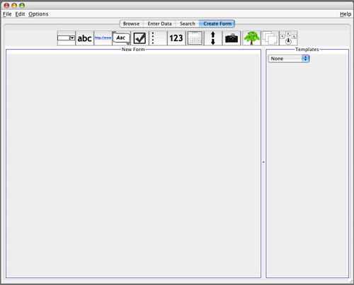
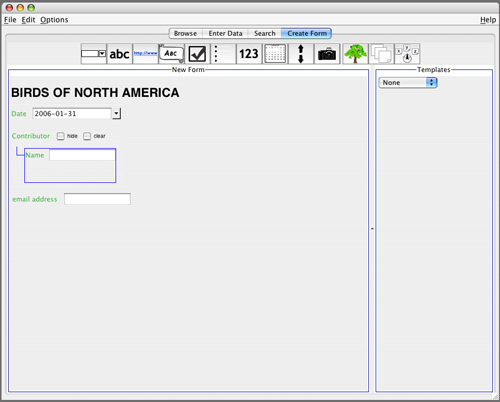

Designing a data form
Designing a data form takes place under the Create Form tab.
The icons along the top represent the different types of
widgets that can be added to a form.
A widget is a data editing
element. Each widget has certain characteristics
which control its look and behavior during data entry. There are two
general categories of widgets: containers and first-level widgets. Containers
contain other widgets, either additional containers and/or first-level widgets.
This allows you to design forms with arbitrary hierarchical nesting.
If you click on one of the icons, that type of widget will be added to the
form. You can then use drag and drop to move widgets around within the form.

To start this form, we clicked the banner widget
icon (circled in red), and changed the label to BIRDS OF NORTH AMERICA.
The other fields are created the same way.

At this point a text field
widget, re-named email address, has just been
added. (By default widgets are added to the end of the
form.)
You can "grab" the email address
field and drag it into the Contributor
container widget, as shown below.
When all of the desired fields have been added, saving this form
will create a Template.
